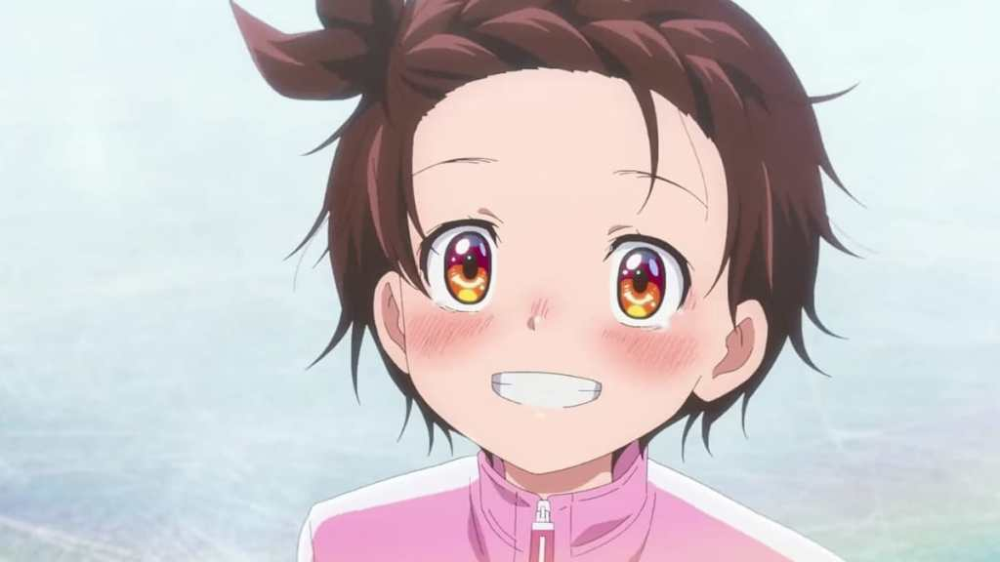
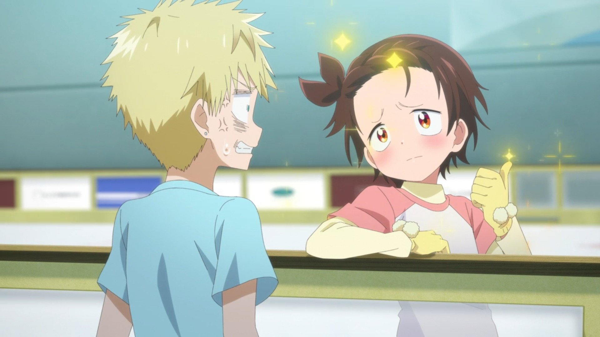

Let’s start with my objective opinion towards this anime. It’s good. Starting with the opening that was sung and written by Kenshi Yonezu himself, with amazing animation and transitions (which I will not elaborate much) in the opening video, especially the zoom in and out in Hikaru part. The opening video also does not really affect the story (like by giving spoilers to us), because this anime’s story focuses on the emotional impact to their audience, which I will explain later.
Next, the animation. Really, ENGI studio sure did a good job in the animation compared to their previous works (e.g. Tantei wa Mou Shindeiru, Unnamed Memories). Well there are some (not more than 5 at least) parts that I find weird in the animation, but overall they are able to liven up the story with the amazing/lively facial expression, choreography (while ice skating and not), details (like fluttering hair when ice skating), and camera angles they take. They also include a 3D animation while the characters are ice skating, which I don’t find any problem with blending it within the anime. For example the hair fluttering detail (there are 2D and 3D animation mixed up in ice skating animation), the expressive character facial animations (which they can maintain), as well their choreography (either hands or legs). The problems I usually find in 3D animations are their unsmooth animation and their rigid expression, and they are able to overcome it spectacularly, in my opinion.
The third is their audio quality. Well, what can I say here? The on point ice skating sound effect, the emotional voice acting of the characters, and the background songs while they are ice skating, which combined with the intensity of their skating performance. What else can I say except that it is really good?
Alright, lastly–the story, oh yeah, spoiler alert! The story is simple, it is about a failed 11/12 (I forgot) years old elementary schooler called Inori Yuitsuka that can’t find anything she can do, and finally decides to do ice skating because of her older sister's influence–and a adult men named Akeuraji Tsukasa–that is Inori’s coach in ice skating–which late in realize his passion in ice skating (he realize it when he is already 14 years old and usually professional ice skaters start their career when they are still 5) and finally failed because the lack of time he have. The story revolves around them, along with many ice skaters and their coaches that want to accomplish their own target (or perhaps dream), which majority of them have the same target, that is going to compete in national tournaments and become the ‘medalist’. Of course, the main characters also have that target as their goal. The story is not complicated, even, it is really simple, “Inori wants to escape from her failed self, while Tsukasa finds himself wanting to help her by coaching Inori because he doesn't want her to feel the same predicament he had back then”, that’s it. Though, what made this anime’s story special is their journey, that is Inori’s journey, resolve, and her hard working attitude, as well Tsukasa’s new way in getting back to ice skating, while helping Inori in her whole journey. Starting with Inori miscommunication with her mother, the introduction of her rival–Kamisaki Hikaru (men she is really gorgeous for a loli!), meet up with many young ice skaters, who have their own problems themselves, that revolve around the word ‘regret’. Regret of not starting earlier, regret of choosing the wrong choices, or even regret of not being able to do anything. If you have watched the anime, I think you will understand what I mean, if you have not, try it! At least one time! If you don’t like it, then this anime is not for you, but if you like it, then we might have the same opinion here! That is my objective opinion about this anime.
Now, let’s move to my subjective opinion. Why I find this anime interesting is simply because of how relatable this anime is to real life, when we are watching it from Tsukasa’s point of view (like how relatable his predicament is in real life). Like the regret we feel when we think we are falling behind the one that has started earlier. The feeling when we feel like we are a failed person. But, Inori was able to overcome all of that, saying ‘then what if I start late’, ‘I will try my hardest’, ‘I want to change from my past self’. Watching her resolve and hard working self, gives me so much motivation in trying even harder in what I am doing, and courage that I am also going to be able to achieve my goal like she is. So what if we are failed and late in the run? I know she is a genius, it is not realistic to immediately, in a short period of time, be able to reach the goal she wants to reach, but again, ‘so what?’. If what we need is to study, then we need to study harder. If what we need is money, then we need to start investing. If what we need is luck, then what we need is a way to increase our chance to succeed, that is to reach that luck. That is the kind of courage and motivation I get when watching her journey. At least that is my opinion when I am watching her journey in these 13 length episodes of anime.
Next, in my opinion, the backstory of each character is also pretty emotional. I know and understand well that their problem revolves around ice skating (which is unrelatable to me), but I still find myself giving sympathy to them, especially Miketa, Rioh, and of course Tsukasa. The feeling of being not understood by people. The feeling of having everything, yet not being able to achieve anything. The feeling of not being able to achieve anything because of the lack of time he had. Man… why is the story of children having fun ice skating being so sad? Alright, I think that is enough of my review. Lastly, my overall score, 8,5/10! The anime is good, but of course, it is not perfect, the story is also pretty simple (I am a mystery genre fan, so I can’t really give it 9 haha), but overall, it is good from the side of animation and drama in my opinion. But again, this is my opinion, so it is a given if someone has a different opinion with me. Also this is the first time I am making a review of a fiction, so, sorry if I am elaborating my opinion with so many mistakes or if I am using many weird phrases.